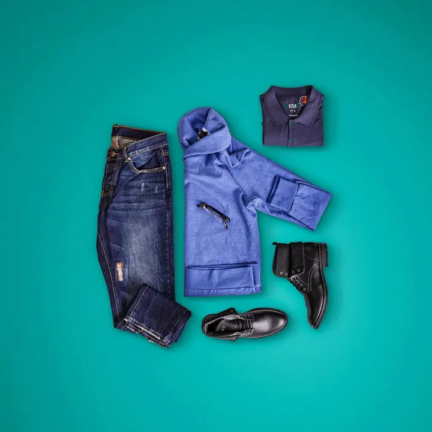
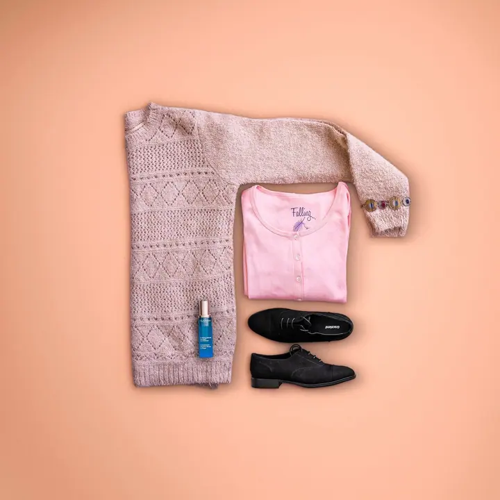
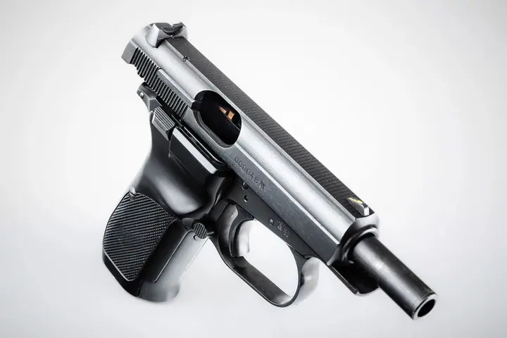
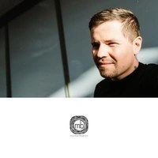

01 / 04
Reklama a produktová fotografie
Fotím produkty, oblečení, interiéry i jídlo a pití pro obchodní značky a časopisy. Používám záblesky a studiovou techniku, náhledy a profesionální retuš jsou samozřejmostí.
Zeptat se na termín→




Fotky pro značky i pro vás
Zeptat se na termín →(01) Ahoj
Jmenuji se Miroslav Belančin a fotím reklamu a produkty , svatby i firemní akce a reportáže . Působím v Praze, na Kladně a ve Středočeském kraji, ale rád za vámi přijedu kamkoli po republice.
(02) Co fotím
01 / 04
Fotím produkty, oblečení, interiéry i jídlo a pití pro obchodní značky a časopisy. Používám záblesky a studiovou techniku, náhledy a profesionální retuš jsou samozřejmostí.
Zeptat se na termín→02 / 04
Nafotím jen obřad, půl dne nebo celý den od příprav až po party. Na přání natočím i svatební video zhruba na pět minut s hudbou podle vašeho výběru.
Zeptat se na termín→03 / 04
Firemní akce, večírky, plesy i sportovní turnaje fotím tak dlouho, jak je potřeba. Výběr a základní úpravu fotek dělám sám.
Zeptat se na termín→Dále nabízím
Páry, rodiny, děti i pracovní portréty, promo a fashion. Focení trvá 1 až 2 hodiny venku, u vás doma nebo uvnitř a obsahuje profesionální retuš.
↗(04) Postup
Od první zprávy po hotovou galerii.
Krok 1 z 4
Napište mi přes formulář, e-mailem nebo na WhatsApp. Ozvu se vám co nejdřív.
Krok 2 z 4
Projdeme spolu, co si přejete a čemu se chcete vyhnout, a doporučím vhodnou přípravu. U svateb se rád představím na osobním setkání.
Krok 3 z 4
Fotím v exteriéru, interiéru, ateliéru nebo na domluveném místě. Na svatbu dorazím zhruba hodinu před začátkem se dvěma profesionálními fotoaparáty.
Krok 4 z 4
Náhledy posílám obvykle do 3 až 7 dnů, hotové fotky do 2 až 4 týdnů od vašeho výběru. U svateb může dodání trvat až 2 měsíce.

Vaši svatbu nafotím za jakéhokoliv počasí.
(05) Za objektivem
Jsem fotograf, videomaker a tvůrce. Narodil jsem se v Praze a dnes fotím po celé České republice. Mým hlavním polem je reklama a produkty, od oblečení a svítidel přes sklo a 3D tisky až po zbraně pro Střeleckou revue a Českou zbrojovku.
Spolupracoval jsem se značkami jako L'Oréal, Generali, Deco Loco, Honewa nebo s OC Europark Praha, pro jehož časopis jsem fotil outfity na modelech. Fotím i firemní akce, sport, koncerty a večírky.
Stejně rád ale fotím lidi. Svatby, páry, rodiny, portréty i mazlíčky všeho druhu. Před každým focením si s vámi projdu vaši představu a poradím s přípravou, aby výsledek odpovídal tomu, co chcete.

Miroslav
Miroslav Belančin · Reklamní a svatební fotograf
Obřad na 2 hodiny stojí 8 900 Kč, půl dne na 5 hodin 15 900 Kč a celý den na 9 hodin 21 900 Kč. Svatební video na 5 hodin vyjde na 16 900 Kč.
U běžných focení si fotky vybíráte sami, rád vám s výběrem pomůžu. U svateb a reportáží dělám výběr já.
Doprava nad 30 km stojí 7 Kč za kilometr. Fotím po celé České republice.
Služby obsahují nevýhradní licenci pro nekomerční užití. Cenu za komerční užití určuji podle rozsahu, nákladu a doby použití.
(07) Kontakt
Napište pár vět o tom, co si představujete, a termín, který se vám hodí.